Les banques jouent un rôle central dans l’économie nationale et internationale. En effet, elles assurent l’intermédiation entre les agents disposant d’un excédent de financement et ceux ayant un besoin de financement, facilitant ainsi les transactions et soutenant l’investissement, et donc la croissance économique. Toutefois, cette activité les expose à divers risques majeurs, notamment le risque de crédit, le risque de liquidité et le risque de marché. La quantification de ces risques est essentielle pour permettre aux institutions bancaires de s’en prémunir et de les surveiller efficacement. Dans ce cadre, la Value-at-Risk (VaR) s’impose comme une mesure de référence. Elle permet d’évaluer la perte potentielle maximale qu’une institution pourrait subir, avec un certain niveau de confiance, sur un horizon temporel donné et pour un portefeuille spécifique.
Dans l’analyse de la VaR, un portefeuille est souvent composé d’au moins deux créances. Il est donc indispensable de prendre en compte les dépendances entre les facteurs de risque. Une approche classique consiste à supposer que le vecteur des risques individuels suit une distribution normale multivariée et à utiliser le coefficient de corrélation linéaire de Pearson comme mesure de dépendance. Cependant, cette hypothèse est souvent trop restrictive en finance : les distributions des facteurs de risque ne sont pas nécessairement gaussiennes et le coefficient de Pearson ne permet pas toujours de capturer les structures de dépendance non linéaires. De plus, cette mesure de corrélation est pertinente uniquement dans un cadre gaussien, qui représente rarement les dynamiques financières réelles.
Dans ce contexte, la théorie des copules constitue un outil statistique puissant permettant de modéliser la dépendance entre les risques sans se limiter à l’hypothèse de normalité. Une copule est une fonction qui caractérise la structure de dépendance entre plusieurs variables aléatoires indépendamment de leurs distributions marginales. En séparant la modélisation des distributions marginales et celle de la dépendance conjointe, les copules offrent une flexibilité accrue pour l’analyse du risque et permettent de mieux représenter les interactions entre les actifs financiers.
L’objectif de ce projet est d’évaluer le risque de crédit en calculant une CreditVaR avec un niveau de confiance de 99% sur un portefeuille composé de deux obligations bancaires. Ces obligations, bien que différentes en termes de subordination et de risque de recouvrement, appartiennent au même secteur, ce qui accroît le risque global du portefeuille. Il est donc essentiel de modéliser adéquatement la dépendance entre ces actifs pour obtenir une estimation réaliste du risque de crédit.
Important
Le rapport de ce projet est disponible sur ce lien.
I. Données
Nous disposons des prix des actions des composantes d’un portefeuille constitué de deux créances issues du secteur bancaire, ayant un même notionnel de \(N = 1000\) euros et une maturité de \(T = 4\) ans. En l’absence de lignes de crédit, l’exposition en cas de défaut de ces banques est égale au notionnel, soit \(EAD = N = 1000\) euros.
La première obligation, de type senior, est émise par BNP et présente un taux de recouvrement moyen de 60% ainsi qu’une volatilité de 15%. La seconde, de type junior (ou subordonnée), est émise par la Société Générale et se caractérise par un taux de recouvrement moyen de 30% et une volatilité de 25%. On suppose qu’il n’existe aucune dépendance entre les taux de recouvrement.
Par ailleurs, nous disposons d’informations sur les spreads des Credit Default Swaps (CDS) des deux banques, qui permettent d’évaluer le risque de crédit en fonction de la maturité des actifs. En effet, les CDS sont des contrats d’assurance contre le défaut d’une entreprise. Le spread d’un CDS représente le coût de cette assurance : plus ce spread est élevé, plus le marché perçoit l’entreprise comme risquée.
On considère que les spreads de CDS de BNP et de Société Générale pour une maturité de \(T = 4\) ans sont respectivement de 100 bps et 120 bps, tandis que pour une maturité de \(T = 5\) ans, ils s’élèvent à 120 bps et 150 bps. Ces CDS ont été évalués avec un taux de recouvrement \(R\) fixé à 40%.
Puisque les spreads de Société Générale sont systématiquement plus élevés, quelle que soit la maturité, on en déduit que l’obligation émise par SG est plus risquée que celle émise par BNP. Cette observation est ainsi cohérente avec la hiérarchie des obligations considérées.
Pour extraire les probabilités de défauts, nous allons utilisé les CDS étant plus liquides que les obligations. Les CDS sont des contrats d’assurance contre le défaut d’une entreprise. Le spread de CDS est le prix de cette assurance. Plus le spread est élevé, plus le marché estime que l’entreprise est risquée. Le fair spread est donnée par :
\[
s* = (1-\delta) \times \lambda
\]
Avec \(\delta\) le taux de recouvrement et \(\lambda\) le hazard rate. Le hazard rate est la probabilité de défaut de l’entreprise. On peut donc isoler le hazard rate :
\[
\lambda = \frac{s*}{1-\delta}
\]
De ce fait, on peut calculer la probabilité de défaut donnée par : \[
PD = P(\tau < T) = 1 - e^{-\lambda \times T}
\]
car \(\tau \sim Exp(\lambda)\)
# Noms des entreprisesfrom pprint import pprintimport numpy as npentreprises = ["BNP", "SG"]def PD(T,spread,Recouvrement): lambda_ = spread / (1- Recouvrement) PD =1- np.exp(-lambda_*T)return PD,lambda_spread_4Y = np.array([100, 120]) /10000# 100 et 120 points de basespread_5Y = np.array([120, 150]) /10000# 120 et 150 points de basetx_recouvrement =0.4proba_defaut_quatre = np.zeros(len(spread_4Y))proba_defaut_cinq = np.zeros(len(spread_5Y))for i inrange(len(spread_4Y)) : proba_defaut_quatre[i],_ = PD(spread=spread_4Y[i],T =4,Recouvrement=0.4)print(_) proba_defaut_cinq[i],_ = PD(spread=spread_5Y[i],T =5,Recouvrement=0.4)print(_)# Création d'un dictionnaire pour stocker les probabilités de défautprobabilites_defaut = {}# Remplir le dictionnairefor i, entreprise inenumerate(entreprises): probabilites_defaut[entreprise] = {"4 ans": round(proba_defaut_quatre[i]*100,4),"5 ans": round(proba_defaut_cinq[i]*100,4) }# Afficher le dictionnairepprint(probabilites_defaut)
Nous constatons que les probabilités de défaut pour les deux entreprises pour une même maturité sont généralement plus élevés pour la Société Générale que pour BNP Paribas. Cela est cohérent avec le type d’obligation émise par les deux entreprises. En effet, une obligation junior est plus risquée qu’une obligation senior.
II. Caractérisation les distributions des taux de recouvrement de chacune des deux créances
Pour caractériser les distributions des taux de recouvrement, on va utiliser la loi Beta(a,b). La loi Beta est une loi de probabilité continue définie sur l’intervalle [0, 1]. Elle est souvent utilisée pour modéliser des variables aléatoires qui prennent des valeurs dans un intervalle borné en forme de U ce qui est le cas des taux de recouvrement. L’expression de sa densité est donnée par :
Puisque nous possédons des taux de recouvrement de moyenne 60% et de volatilité 15% pour la première créance et de moyenne 30% et de volatilité 25% pour la seconde créance, nous allons utiliser la méthode des moments pour déterminer les paramètres a et b de la loi Beta. De ce fait, les paramètres sont calibrés de la manière suivante :
\[
a = \frac{\mu^2 \times (1-\mu)}{\sigma^2} - \mu; \quad b = \frac{\mu^2 \times (1-\mu)}{ \mu \sigma^2} - (1-\mu )
\]
La première est une obligation BNP senior de taux de recouvrement de moyenne 60% et de volatilité 15%, et la seconde est une obligation Société Générale junior (ou subordonnée) de taux de recouvrement de moyenne 30% et de volatilité 25%.
II.1. Caractérisation de la distribution des tx de recouvrement BNP
import numpy as nptx_recouvrement_BNP =0.6vol_recouvrement_BNP =0.15def calibration_beta(mu,sigma): a = ((mu**2) * (1- mu) / (sigma**2)) - mu b = ((mu**2) * (1- mu)**2/ (mu*(sigma**2))) - (1-mu)return a,b# def moment_beta(moyenne, variance):# alpha = (moyenne * (1 - moyenne) / variance**2 - 1) * moyenne# beta = (moyenne * (1 - moyenne) / variance**2 - 1) * (1 - moyenne)# return alpha, betaa_BNP,b_BNP = calibration_beta(tx_recouvrement_BNP,vol_recouvrement_BNP)print("a_BNP = ", a_BNP)print("b_BNP = ", b_BNP)# densité betafrom scipy.stats import betaimport matplotlib.pyplot as pltx = np.linspace(0,1,100)y_BNP = beta.pdf(x,a_BNP,b_BNP)plt.plot(x,y_BNP)plt.title("Densité de probabilité du taux de recouvrement de BNP")
a_BNP = 5.8
b_BNP = 3.8666666666666676
Text(0.5, 1.0, 'Densité de probabilité du taux de recouvrement de BNP')
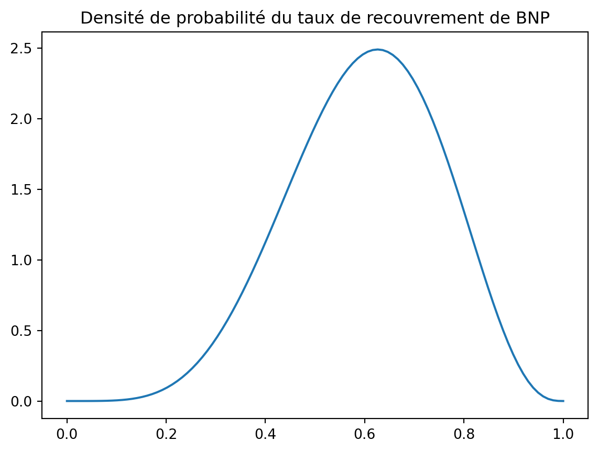
Nous constatons que la distribution des taux de recouvrement de BNP est légèrement asymétrique à droite. En effet, le paramètre a, contrôle la concentration des valeurs proches de 1, est supérieur au paramètre b, contrôle la concentration des valeurs proches de 0. De ce fait, la distribution est asymétrique à gauche. Cependant que la majorité des valeurs sont concentrées autour de la moyenne et il y a une faible probabilité de recouvrement très bas ou très élevé.
II.2. Caractérisation de la distribution des tx de recouvrement SG
tx_recouvrement_SG =0.3vol_recouvrement_SG =0.25a_SG,b_SG = calibration_beta(tx_recouvrement_SG,vol_recouvrement_SG)print("a_SG = ", a_SG)print("b_SG = ", b_SG)# densité betay_SG = beta.pdf(x,a_SG,b_SG)plt.plot(x,y_SG)plt.title("Densité de probabilité du taux de recouvrement de BNP")
a_SG = 0.708
b_SG = 1.652
Text(0.5, 1.0, 'Densité de probabilité du taux de recouvrement de BNP')
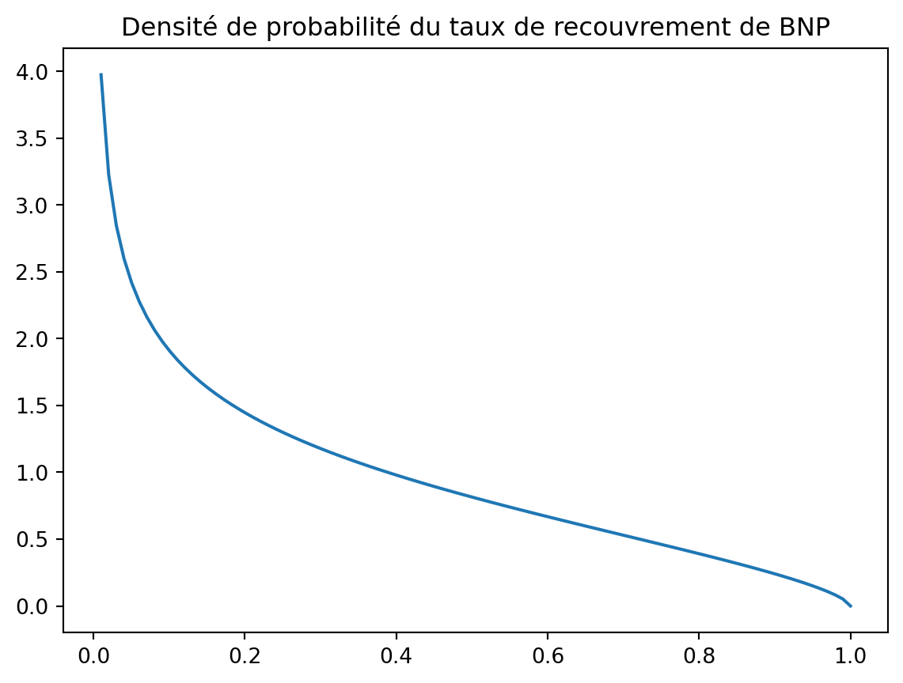
En ce qui concerne la distribution des taux de recouvrement de la Société Générale, nous constatons une asymétrie à gauche également.
La densité est très asymétrique, décroissant fortement à partir de 0. On constate une forte concentration des valeurs proches de 0 indique un risque élevé de faible recouvrement. La longue traîne vers la droite signifie que, bien que des recouvrements plus élevés soient possibles, ils sont peu probables.
II.3. Comparaison des distributions
plt.figure(figsize=(10, 5))plt.plot(x, y_BNP, label='BNP')plt.plot(x, y_SG, label='SG')plt.title("Densités de probabilité des taux de recouvrement")plt.legend()plt.show()
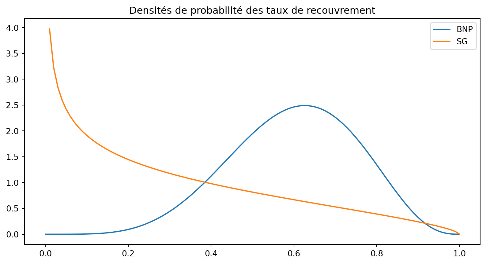
BNP senior : L’obligation senior bénéficie d’un taux de recouvrement plus élevé et plus stable, donc moins risqué.
SG junior : L’obligation junior a une probabilité élevée d’un recouvrement très faible, ce qui reflète un risque plus important.
Cela est cohérent avec la catégorisation des obligations. Dans la hiérarchie des dettes, une obligation peut être classée comme senior ou junior (subordonnée) en fonction de la priorité de remboursement en cas de faillite de l’émetteur. Cette distinction est essentielle pour évaluer le risque de crédit et le taux de recouvrement attendu. Une obligation classée senior est moins risquée qu’une obligation junior, car elle est remboursée en premier en cas de défaut de l’émetteur, cependant le rendement attendu est moins élevé. Par conséquent, les obligations senior ont un taux de recouvrement plus élevé et plus stable que les obligations junior.
III. Caractérisation des lois de défauts
Pour caractériser les lois de défaut, nous avons besoin de prendre en compte la structure de dépendance en plus des lois marginales présentées dans la section I. Pour ce faire, nous devons utiliser un produit dnt le prix dépendant de la dépendance entre les défauts des deux entreprises. Dans notre cas, nous utiliserons le prix des actions des deux entreprises pour déterminer la dépendance entre les défauts.
III.1. Analyse exploratoire univariée des données actions de ces deux entreprises.
En observant le prix des actions BNP et SG, nous constatons que les actions BNP ont un prix plus élevés que les actions SG. Cela est cohérent avec la capitalisation boursière des deux entreprises. De plus, nous constatons que les rendements de BNP sont semblables à ceux de SG. Cela est cohérent avec le fait que les deux entreprises sont des banques françaises et sont donc exposées aux mêmes risques macroéconomiques. Néanmoins, les actions de BNP présentent une volatilité légèrement plus élevé que celles de SG.
# read data.txtimport pandas as pdimport matplotlib.pyplot as pltdata = pd.read_csv('data_copules.txt', sep="\t")data.head()
BNP
SG
0
42.36
55.24
1
42.72
55.59
2
43.20
56.45
3
42.67
55.55
4
41.81
54.50
plt.figure(figsize=(10, 5))plt.plot(data['BNP'], label='BNP')plt.plot(data['SG'], label='SG')plt.title("Prix des actions")plt.legend()plt.show()
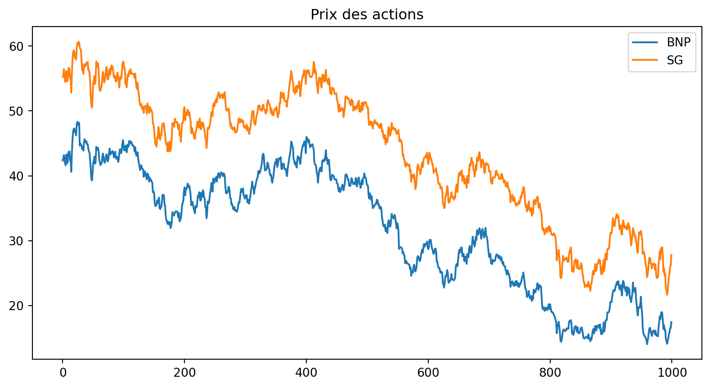
returns = pd.DataFrame()returns["BNP"] = data["BNP"].pct_change().dropna()returns["SG"] = data["SG"].pct_change().dropna()fig, axes = plt.subplots(1, 2, figsize=(12, 5), sharey=True)# Premier sous-graphique : Rendements BNPaxes[0].plot(returns["BNP"], color='tab:blue')axes[0].set_title("Rendements BNP")axes[0].grid(True)# Deuxième sous-graphique : Rendements SGaxes[1].plot(returns["SG"], color='tab:orange')axes[1].set_title("Rendements SG")axes[1].grid(True)# Ajustement automatique pour éviter les chevauchementsplt.tight_layout()# Affichageplt.show()
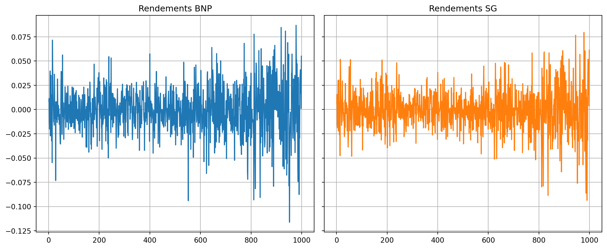
returns.describe()
BNP
SG
count
999.000000
999.000000
mean
-0.000590
-0.000473
std
0.024340
0.020690
min
-0.116199
-0.093616
25%
-0.013771
-0.011760
50%
-0.000358
-0.000547
75%
0.012605
0.011286
max
0.086786
0.079479
III.2. Modélisation des distributions univariées des facteurs de risques
Dans le cadre des prix des actions, le seul facteur de risque est le rendement. Nous allons donc modéliser les rendements des actions de BNP et SG par des lois normales, lois student, skew student, et Normal Inverse Gaussian afin de déterminer la loi qui s’ajuste le mieux aux données.
III.2.1. Modélisation des rendements de BNP
En ce qui concerne les rendements de BNP, nous constatons que les lois de student et normal inverse gaussian sont les plus adaptées pour modéliser les rendements de BNP. En effet, lorsqu’on compare les QQ-plot des rendements de BNP avec les lois normales, student, skew student et normal inverse gaussian, on constate que les quantiles empiriques des rendements de BNP sont plus proches des quantiles théoriques des lois student et normal inverse gaussian. De plus, les densités ajustées semblent également mieux coller aux données.
Si l’on devait choisir une loi pour modéliser les rendements de BNP, nous choisirions la loi normal inverse gaussian. En effet, bien qu’elle soit plus complexe à modéliser, elle permet d’avoir un p-value, au test de Kolmogorov-Smirnov, plus élevé que la loi student. Cela signifie que la loi normal inverse gaussian est plus adaptée pour modéliser les rendements de BNP.
import matplotlib.pyplot as pltimport numpy as npimport scipy.stats as stats# Simulation de données pour l'exemple (remplace par tes données réelles)data = returns["BNP"]# Création de la figure et des axes pour 4 subplots (2 lignes, 2 colonnes)fig, axs = plt.subplots(3, 2, figsize=(14, 10))######################## Loi normale ########################params_norm = stats.norm.fit(data)# Histogramme avec densité théorique de la loi normale (subplot 0,0)xs = np.linspace(np.min(data), np.max(data), 200)axs[0, 0].hist(data, bins=30, density=True, alpha=0.5, label="Histogram")axs[0, 0].plot(xs, stats.norm.pdf(xs, *params_norm), label='Normal Distribution', color='red')axs[0, 0].set_title('Densité ajustée - loi normale')axs[0, 0].legend(loc='upper left')# Q-Q plot (subplot 0,1)stats.probplot(data, dist="norm",sparams=(params_norm), plot=axs[0, 1])axs[0, 1].set_title('Q-Q Plot - loi normale')######################## Loi de student ######################### Estimation des paramètres de la distribution de Student pour vos données.params_std= stats.t.fit(data)# Histogramme avec densité théorique de la loi de Student.xs = np.linspace(np.min(data), np.max(data), 200)axs[1, 0].hist(data, bins=30, density=True, alpha=0.5, label="Histogram")axs[1, 0].plot(xs, stats.t.pdf(xs, *params_std), label='Fitted t-Distribution',color='orange')axs[1, 0].set_title('Densité ajustée - loi de student')axs[1, 0].legend(loc='upper left')# Q-Q plot avec une loi de Student.stats.probplot(data, dist="t", sparams=(params_std), plot=axs[1, 1])axs[1, 1].set_title('Q-Q Plot - loi de student')######################## Loi de Normal Inverse Gaussian ########################params_nig = stats.norminvgauss.fit(data)axs[2, 0].hist(data, bins=30, density=True, alpha=0.5, label="Histogram")axs[2, 0].plot(xs, stats.norminvgauss.pdf(xs, *params_nig), label='Fitted normal inverse gaussian',color='green')axs[2, 0].set_title('Densité ajustée - loi normale inverse gaussienne')axs[2, 0].legend(loc='upper left')# Q-Q plot avec une loi de NIG.stats.probplot(data, dist="norminvgauss", sparams=(params_nig), plot=axs[2, 1])axs[2, 1].set_title('Q-Q Plot - loi normale inverse gaussienne')plt.tight_layout()# Affichage des graphiquesplt.show()U = pd.DataFrame(index=returns.index, columns=returns.columns)U['BNP'] = stats.norminvgauss.cdf(data,*params_nig)
==================================================
Test de Kolmogorov-Smirnov
==================================================
Statistic p-value
Normal 0.051878 0.008908
Student 0.027225 0.441752
Normal Inverse Gaussian 0.026466 0.477953
==================================================
III.2.1. Modélisation des rendements de SG
Comme les rendements de BNP, les rendements de SG sont mieux modélisés par les lois student et normal inverse gaussian.
import matplotlib.pyplot as pltimport numpy as npimport scipy.stats as stats# Simulation de données pour l'exemple (remplace par tes données réelles)data = returns["SG"]# Création de la figure et des axes pour 4 subplots (2 lignes, 2 colonnes)fig, axs = plt.subplots(3, 2, figsize=(14, 10))######################## Loi normale ########################params_norm = stats.norm.fit(data)# Histogramme avec densité théorique de la loi normale (subplot 0,0)xs = np.linspace(np.min(data), np.max(data), 200)axs[0, 0].hist(data, bins=30, density=True, alpha=0.5, label="Histogram")axs[0, 0].plot(xs, stats.norm.pdf(xs, *params_norm), label='Normal Distribution', color='red')axs[0, 0].set_title('Densité ajustée - loi normale')axs[0, 0].legend(loc='upper left')# Q-Q plot (subplot 0,1)stats.probplot(data, dist="norm",sparams=(params_norm), plot=axs[0, 1])axs[0, 1].set_title('Q-Q Plot - loi normale')######################## Loi de student ######################### Estimation des paramètres de la distribution de Student pour vos données.params_std= stats.t.fit(data)# Histogramme avec densité théorique de la loi de Student.xs = np.linspace(np.min(data), np.max(data), 200)axs[1, 0].hist(data, bins=30, density=True, alpha=0.5, label="Histogram")axs[1, 0].plot(xs, stats.t.pdf(xs, *params_std), label='Fitted t-Distribution',color='orange')axs[1, 0].set_title('Densité ajustée - loi de student')axs[1, 0].legend(loc='upper left')# Q-Q plot avec une loi de Student.stats.probplot(data, dist="t", sparams=(params_std), plot=axs[1, 1])axs[1, 1].set_title('Q-Q Plot - loi de student')######################## Loi de Normal Inverse Gaussian ########################params_nig = stats.norminvgauss.fit(data)axs[2, 0].hist(data, bins=30, density=True, alpha=0.5, label="Histogram")axs[2, 0].plot(xs, stats.norminvgauss.pdf(xs, *params_nig), label='Fitted normal inverse gaussian',color='green')axs[2, 0].set_title('Densité ajustée - loi normale inverse gaussienne')axs[2, 0].legend(loc='upper left')# Q-Q plot avec une loi de NIG.stats.probplot(data, dist="norminvgauss", sparams=(params_nig), plot=axs[2, 1])axs[2, 1].set_title('Q-Q Plot - loi normale inverse gaussienne')plt.tight_layout()# Affichage des graphiquesplt.show()U['SG'] = stats.norminvgauss.cdf(data,*params_nig)U = U.to_numpy()
==================================================
Test de Kolmogorov-Smirnov
==================================================
Statistic p-value
Normal 0.047345 0.021967
Student 0.025635 0.519206
Normal Inverse Gaussian 0.022462 0.685866
==================================================
III.3. Etude de la structure de dépendance
L’évaluation de la dépendance entre les facteurs de risque sera réalisée en utilisant des outils graphiques basés sur des critères non paramétriques, tels que les nuages de points, les ajustements linéaires et le dépendogramme.
Ces méthodes, choisies pour leur capacité à traiter des données sans présupposer une distribution spécifique, offrent une approche flexible et visuelle pour identifier et analyser les relations entre les variables de risque. Par exemple, les nuages de points permettent de visualiser la dispersion et la relation potentielle entre deux variables, tandis que les ajustements linéaires cherchent à modéliser la relation par une ligne droite, facilitant ainsi la compréhension des tendances générales.
Le dépendogramme, quant à lui, représente la structure de dépendance sous la forme du nuage de points des marges uniformes extraites de l’échantillon n couples de données \(\left(\left(x_{1,1} ; x_{2,1}\right), \cdots,\left(x_{1, n} ; x_{2, n}\right)\right)\), i.e. :
Le dépendogramme de l’échantillon est donc la représentation de n couples \(\left(\left(u_{1,1} ; u_{2,1}\right), \cdots,\left(u_{1, n} ; u_{2, n}\right)\right)\). Il permet d’observer le caractère plus ou moins simultané des réalisations issues de l’échantillon.
# Tableax avec tx de pearson, spearman et kendallfrom scipy.stats import pearsonr, spearmanr, kendalltaupearson = pearsonr(returns["BNP"], returns["SG"])spearman = spearmanr(returns["BNP"], returns["SG"])kendall = kendalltau(returns["BNP"], returns["SG"])tableau_correlation = pd.DataFrame({"Pearson": pearson,"Spearman": spearman,"Kendall": kendall}, index=["Coefficient", "p-value"])tableau_correlation
Pearson
Spearman
Kendall
Coefficient
8.646588e-01
8.409565e-01
6.690959e-01
p-value
2.383438e-300
3.609139e-268
9.880880e-220
En analysant la corrélation entre les rendements de BNP et SG, nous constatons qu’il y a une corrélation positive significative peu importe le test de corrélation effectué. La corrélation de spearman et de pearson indique qu’il y a une liaison monotone et linéaire forte d’au moins 84% entre les rendements des deux entreprises. En ce qui concerne le taux de kendall, nous constatons une corrélation positive significative de 67% environ. Cela signifie que les rendements des actions de BNP et SG sont positivement corrélés.
Warning
Attention la corrélation de pearson n’est pas une mesure de concordance contrairement au coefficient de spearman. Dans notre cas, il indique une corrélation linéaire forte.
# Dependogramme# Posons x1, u1 = BNP et x2, u2 = SGimport warningsfrom scipy.stats import rankdatawarnings.filterwarnings("ignore")# 1. Transformation en pseudo-observationsdef pseudo_observations(X):"""Transforme les données en pseudo-observations U dans [0,1].""" n, d = X.shape U = np.zeros((n, d))for j inrange(d): U[:, j] = rankdata(X[:, j]) / (n +1) # Pour éviter les 1 strictsreturn UX = returns.to_numpy()u_obs = pseudo_observations(X)plt.figure(figsize=(10, 5))plt.subplot(1,2,1) # 1 ligne, 2 colonnes, premier graphique# nuages de points des données BNP et SGplt.scatter(returns["BNP"], returns["SG"], cmap="viridis")# Ajout la droite qui s'ajuste aux donnéesplt.plot(np.unique(returns["BNP"]), np.poly1d(np.polyfit(returns["BNP"], returns["SG"], 1))(np.unique(returns["BNP"])), color="red", label="Droite d'ajustement")plt.title("Nuages de points des rendements")plt.xlabel("x1")plt.ylabel("x2")plt.legend()plt.grid(False)plt.subplot(1,2,2)plt.scatter(u_obs[:,0], u_obs[:,1])plt.title("Dépendogrammes")plt.xlabel("u1")plt.ylabel("u2")plt.legend()plt.grid(False)plt.show()
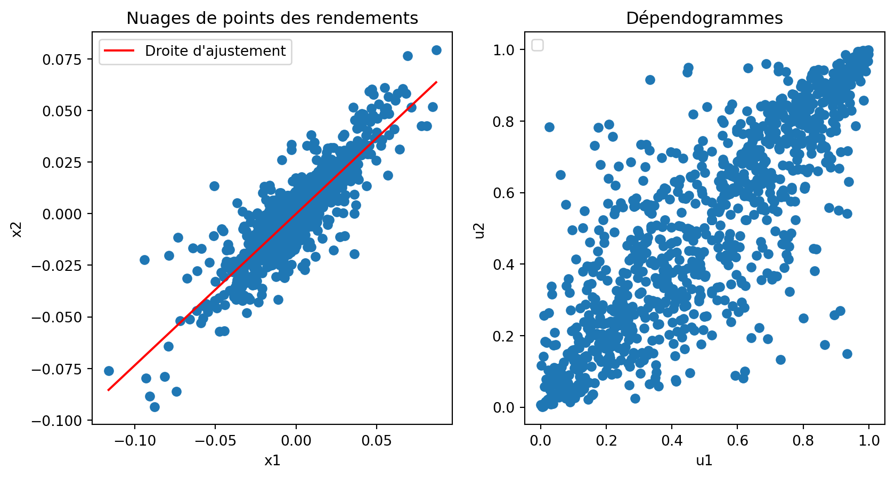
En observant le dépendogramme, nous constatons la même dépendance positive entre les deux entreprises. Cela signifie que si l’une des entreprises fait défaut, l’autre a plus de chance de faire défaut également. Cela est cohérent avec la corrélation positive observée entre les rendements des actions de BNP et SG.
De plus, en observant le dépendogramme, il semble avoir des dépendances à gauche et à droite entre les deux entreprises. Nous allons tout de même tester un éventail de copules afin de vérifier laquelle des copules est la plus adaptée à notre cas : - Copules elliptiques : gaussienne, Student. - Copules archimédiennes : Clayton, Gumbel, Frank.
Il faudrait au préalable estimer les paramètres des copules archimédiennes et elliptiques pour déterminer laquelle des copules est la plus adaptée à notre cas. Précedemment, nous avons estimé les paramètres des lois marginales des rendements de BNP et SG. Nous allons utiliser ces paramètres pour estimer les paramètres des copules. Nous allons utiliser ces paramètres pour la modélisation des différentes copules.
III.4. Modélisation la structure de dépendance au moyen des copules paramétriques
Pour modéliser la structure de dépendance entre les défauts, de manière précise, nous utiliserons les copules. Une copule est une fonction de répartition multivariée de marginales uniformes sur \([0,1]\). Dans le cas bivarié, on a:
Il s’agira après estimation des paramètres et des tests d’ajustement, la copule la plus adéquate pour modéliser au mieux la dépendance entre les variables étudiées.
Pour l’estimation des paramètres des copules sélectionnées, plusieurs approches méthodologiques s’offrent à nous: la méthode des moments, la méthode du maximum de vraisemblance et l’approche IFM. Nous privilégierons l’approche IFM (Inference Functions for Margins) présenté ci dessous (algo \(\ref{IFM}\)). Cet algorithme a l’avantage d’être plus rapide que la méthode du maximum de vraisemblance.
Pour l’évaluation de l’ajustement des copules à la structure de dépendance d’un échantillon, nous utiliserons des outils graphiques tels que le dépendogramme, présenté précedemment, et le Kendall plot.
Le Kendall plot permet une comparaison directe entre la copule empirique et la copule théorique. Plus le Kendall plot se rapproche d’une droite, plus l’ajustement entre la structure de dépendance de l’échantillon et la copule estimée sur ce même échantillon est bon.
III.4.1 Copule gaussienne
III.4.1.a. Estimation des paramètres de la copule gaussienne
Dans le cadre de la copule gaussienne, il nous faut la matrice de variance qui est donnée par :
Dans notre cas, le seul paramètre à estimer est le coefficient de corrélation de pearson. Nous allons donc estimer le coefficient de corrélation de pearson entre les rendements des actions de BNP et SG.
Pour simuler la copule gaussienne, nous allons utiliser la méthode de distribution puisque la loi est facile à implémenter.
# # Simuler réalisation W suivant une loi normale centrée multivariée# import scipy.stats as stats# np.random.seed(0)# n = 1000# W = np.random.multivariate_normal([0, 0], mat, n)# # Calculer U1 et U2# U = np.zeros((n, 2))# for i in range(n):# U[i,0] = stats.norm.cdf(W[i,0])# U[i,1] = stats.norm.cdf(W[i,1])n = u_obs.shape[0]_ = GaussianCopula(corr = rho).rvs(n)u_est = pseudo_observations(_)
III.4.1.c. Test d’ajustement
plt.figure(figsize=(10, 5))plt.scatter(u_obs[:,0], u_obs[:,1], label ="Données empiriques", color ="grey")plt.scatter(u_est[:,0], u_est[:,1], label ="Copule gaussienne", color ="red")plt.title("Dépendogrammes")plt.xlabel("u1")plt.ylabel("u2")plt.legend()plt.grid(False)plt.show()
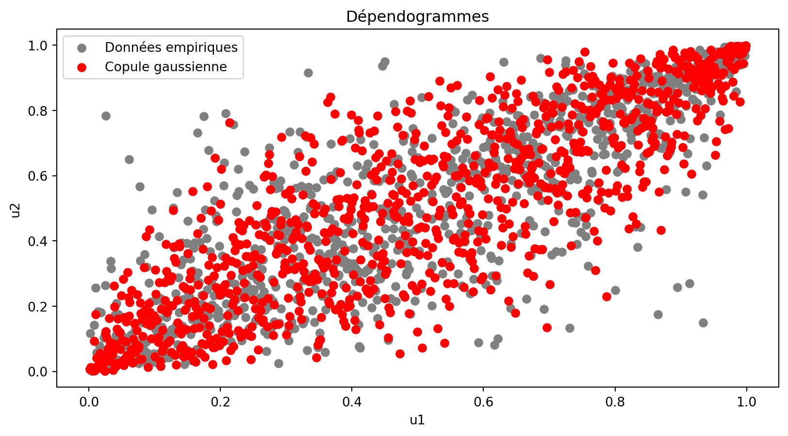
# Kendall plotimport numpy as npdef calculer_Hi_vect(U): n=len(U) H = np.zeros(n, dtype=int)# Comparaison de chaque paire une seule foisfor i inrange(n):# Créer des masques booléens pour les conditions cond1 = U[:, 0] <= U[i, 0] # u_{1,j} <= u_{1,i} cond2 = U[:, 1] <= U[i, 1] # u_{2,j} <= u_{2,i}# Appliquer les conditions et exclure le cas où i == j H[i] = (np.sum(np.logical_and(cond1, cond2)) -1)return H/(len(U)-1)def kendall_plot(U,S=1000,copula="gaussian",rho=None,nu=None,theta=None): H_i = calculer_Hi_vect(U) n =len(U) H_means = np.zeros((S, n)) # S lignes et n colonnesfor s inrange(S):if copula =='gaussian': X_ = GaussianCopula(corr=rho).rvs(n)elif copula =='student': X_ = StudentTCopula(df = nu, corr = rho).rvs(n)elif copula =="gumbel": X_= GumbelCopula(theta = theta).rvs(n)elif copula =="clayton": X_= ClaytonCopula(theta = theta).rvs(n)elif copula =="frank": X_= FrankCopula(theta = theta).rvs(n) U_=pseudo_observations(X_) H_means[s] = np.sort(calculer_Hi_vect(U_)) H_mean = np.mean(H_means, axis=0) # axis=0 pour moyenne par colonne x,y = np.sort(H_i), np.sort(H_mean)print(x.shape, y.shape) plt.figure(figsize=(8, 5)) plt.plot(x, y) plt.plot([0, 1], [0, 1], color="red", linestyle="--") plt.title(f"Kendall plot for {copula} copula") plt.xlabel("i") plt.ylabel("Kendall") plt.grid(True) plt.show()S=1000kendall_plot(u_obs,S,copula="gaussian",rho=rho)
(999,) (999,)
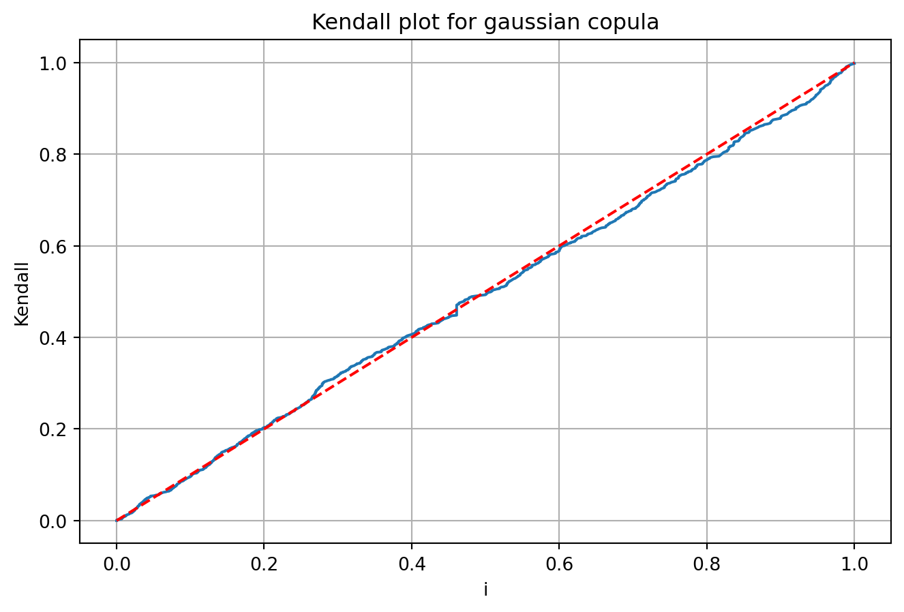
III.4.1.d. Test d’adéquation
# Copule empirique Cn(u)def empirical_copula_cdf(U, u):"""Calcule la copule empirique Cn(u)."""return np.mean(np.all(U <= u, axis=1))# Statistique de Cramér-von Misesdef cramer_von_mises_stat(U, copula):"""Calcule la statistique de test Tn.""" n =len(U) Tn =0.0for i inrange(n): u_i = U[i] Cn = empirical_copula_cdf(U, u_i) # Copule empirique Cn(u_i) C_theta = copula.cdf([u_i]) # Copule théorique estimée Cθ(u_i) Tn += (Cn - C_theta) **2return Tn# Test d’adéquation complet avec bootstrap paramétriquedef adequation_test(X, copula_type="gaussian", M=500):""" Test d'adéquation de Genest & Rémillard (2008) pour une copule avec statistique de Cramér-von Mises et bootstrap paramétrique. """# Pseudo-observations U = pseudo_observations(X) n =len(U)# Estimation MLE de la copule sur les données params = fit_copula(U, copula_type) copula = get_copula(copula_type, params)# Calcul de la statistique observée Tn T_obs = cramer_von_mises_stat(U, copula)# Bootstrap paramétrique T_boot = []for _ inrange(M):# 1. Simulation d’un échantillon sous la copule ajustée U_boot = copula.rvs(n)# 2. Ré-estimation de la copule sur U_boot params_boot = fit_copula(U_boot, copula_type) copula_boot = get_copula(copula_type, params_boot)# 3. Calcul de Tn pour cet échantillon bootstrap T_boot.append(cramer_von_mises_stat(U_boot, copula_boot))# Calcul de la p-value (proportion des T_boot supérieurs à T_obs) p_value = np.mean(np.array(T_boot) >= T_obs)return {"copula_type": copula_type,"params": params,"T_obs": T_obs,"p_value": p_value }from pprint import pprintresult_gaussian = adequation_test(X, copula_type="gaussian")pprint(result_gaussian)
n = u_obs.shape[0]_ = StudentTCopula(corr = rho, df=nu).rvs(n)u_est = pseudo_observations(_)
III.4.2.c. Test d’ajustement
plt.figure(figsize=(10, 5))plt.scatter(u_obs[:,0], u_obs[:,1], label ="Données empiriques", color ="grey")plt.scatter(u_est[:,0], u_est[:,1], label ="Copule de student", color ="red")plt.title("Dépendogrammes")plt.xlabel("u1")plt.ylabel("u2")plt.legend()plt.grid(False)plt.show()
Attention, nous avons utilisé le package copula.api de statsmodels pour implémenter les copules. Cependant, la classe correspondant à la copule de Student ne permet pas d’obtenir une fonction de répartition (voir lien).
En utilisant un environnement virtuel, il a été possible de modifier le fichier statsmodels/distributions/copula/elliptical.py du package afin d’implémenter la méthode pour la fonction de répartition. Vous trouverez ce fichier ci-joint afin de garantir le bon fonctionnement du code si vous devez le relancer.
III.4.2.d. Test d’adéquation
from pprint import pprintresult_std = adequation_test(X, copula_type="student") # ATTENTION DIFFICULTE POUR ESSTIMER COPULE STUDENTpprint(result_std)
n = u_obs.shape[0]_ = ClaytonCopula(theta= theta).rvs(n)u_est = pseudo_observations(_)
III.4.3.c. Test d’ajustement
plt.figure(figsize=(10, 5))plt.scatter(u_obs[:,0], u_obs[:,1], label ="Données empiriques", color ="grey")plt.scatter(u_est[:,0], u_est[:,1], label ="Copule de clayton", color ="red")plt.title("Dépendogrammes")plt.xlabel("u1")plt.ylabel("u2")plt.legend()plt.grid(False)plt.show()
n = u_obs.shape[0]_ = GumbelCopula(theta= theta).rvs(n)u_est = pseudo_observations(_)
III.4.4.c. Test d’ajustement
plt.figure(figsize=(10, 5))plt.scatter(u_obs[:,0], u_obs[:,1], label ="Données empiriques", color ="grey")plt.scatter(u_est[:,0], u_est[:,1], label ="Copule de gumbel", color ="red")plt.title("Dépendogrammes")plt.xlabel("u1")plt.ylabel("u2")plt.legend()plt.grid(False)plt.show()
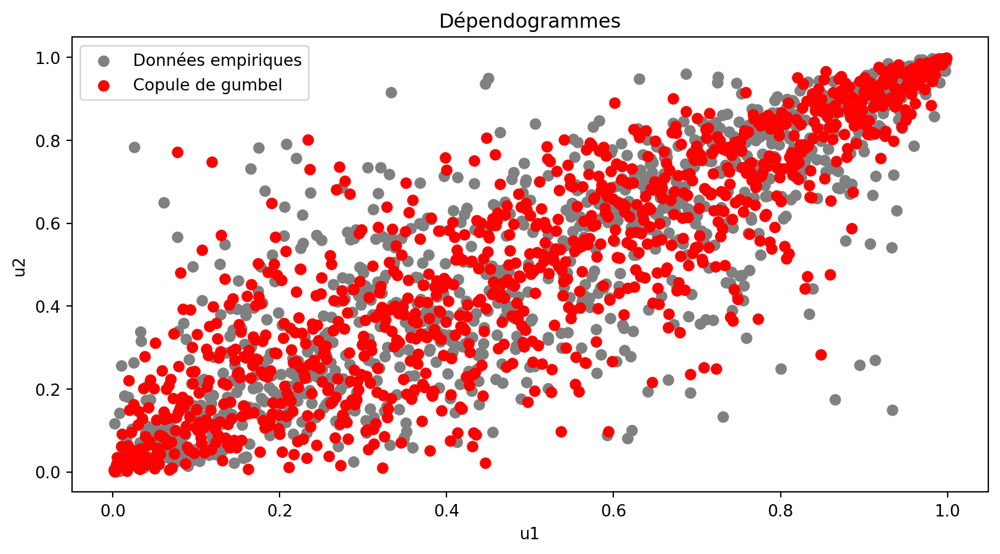
kendall_plot(u_obs,S,copula="gumbel",theta=theta)
(999,) (999,)
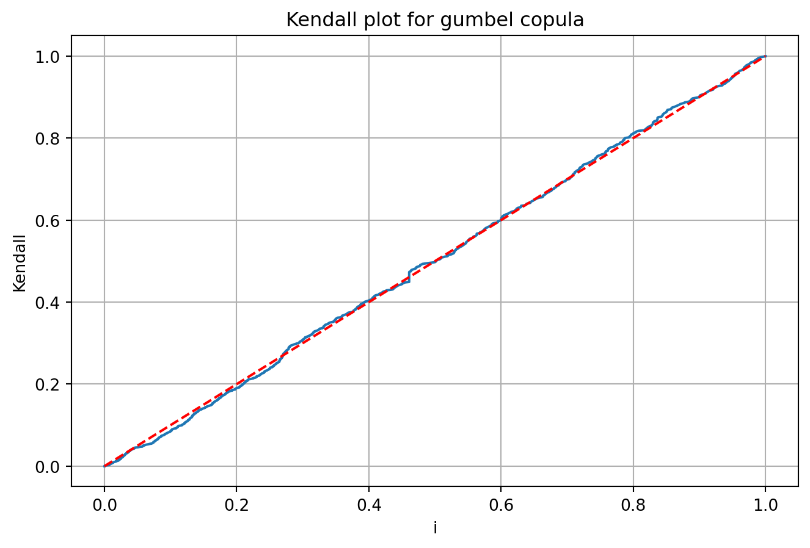
III.4.4.d. Test d’adéquation
from pprint import pprintresult_gumbel = adequation_test(X, copula_type="gumbel") pprint(result_gumbel)
n = u_obs.shape[0]_ = FrankCopula(theta= theta).rvs(n)u_est = pseudo_observations(_)
III.4.4.c. Test d’ajustement
plt.figure(figsize=(10, 5))plt.scatter(u_obs[:,0], u_obs[:,1], label ="Données empiriques", color ="grey")plt.scatter(u_est[:,0], u_est[:,1], label ="Copule de frank", color ="red")plt.title("Dépendogrammes")plt.xlabel("u1")plt.ylabel("u2")plt.legend()plt.grid(False)plt.show()
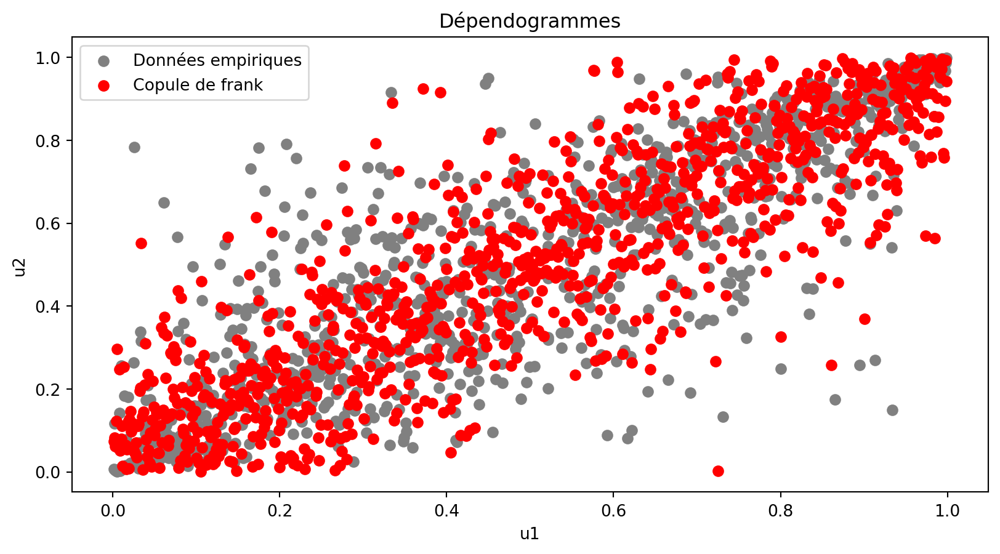
kendall_plot(u_obs,S,copula="frank",theta=theta)
(999,) (999,)
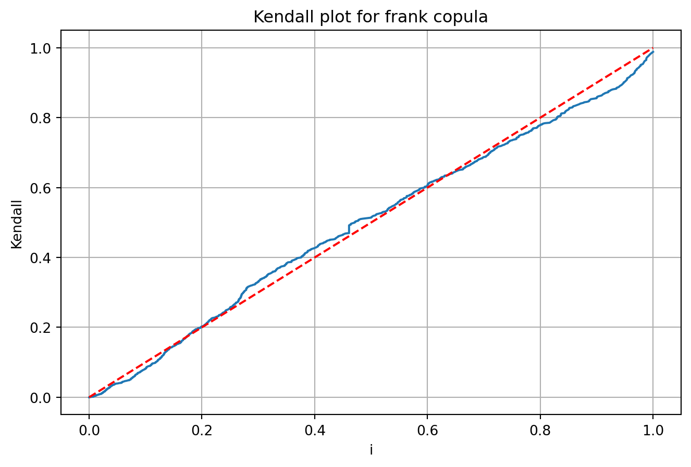
III.4.4.d. Test d’adéquation
from pprint import pprintresult_frank = adequation_test(X, copula_type="frank") pprint(result_frank)
Nos résultats mettent en évidence l’importance de la structure de dépendance dans l’évaluation du risque de crédit. Après avoir testé plusieurs copules paramétriques, nous avons retenu la copule de Gumbel comme la plus appropriée, en raison de son bon ajustement aux données et de sa capacité à capturer les asymétries et les queues de distribution lourdes, essentielles dans un contexte de crise financière.
La simulation Monte Carlo nous a permis d’estimer la distribution des pertes du portefeuille et de déterminer une CreditVaR à 99% de 1286,61 euros. L’analyse de la convergence des résultats confirme la robustesse de cette estimation, qui reste stable malgré les variations de taille d’échantillon.
Ainsi, cette étude illustre la pertinence des copules pour modéliser de manière plus réaliste la dépendance entre les actifs financiers, là où les approches classiques fondées sur la corrélation linéaire sont insuffisantes. Une perspective d’amélioration pourrait consister à explorer des copules dynamiques ou à affiner l’estimation des paramètres via des méthodes bayésiennes.
# Calcul de la credit var par monte carlodef credit_var(params_R1,params_R2,lambda_1,lambda_2,EAD,params,S,tau,copula_type="gumbel",alpha=0.99):""" Cette fonction est Var de niveau alpha qui estime la perte maximale sur l'horizon tau et retourne le quantile de niveau 99% pour dim=2. """ copula = get_copula(copula_type, params) U = copula.rvs(S) a1,b1 = params_R1 a2,b2 = params_R2# Générer des échantillons pour lgd_bnp et lgd_sg avec la loi Beta, vectorisée LGD1 =1- np.random.beta(a1, b1, S) LGD2 =1- np.random.beta(a2, b2, S)# Simuler tau_bnp et tau_sg en utilisant la fonction de répartition inverse de la loi exponentielle tau_bnp = stats.expon.ppf(U[:, 0], scale=1/lambda_1) tau_sg = stats.expon.ppf(U[:, 1], scale=1/lambda_2)# Calculer les pertes, vectorisée L1 = np.where(tau_bnp < tau, LGD1 * EAD, 0) L2 = np.where(tau_sg < tau, LGD2 * EAD, 0)# Somme des pertes L = L1 + L2# Calculer et retourner le quantile de niveau 99%return np.percentile(L, alpha *100)
# Tracer la courbe de la VaR en fonction de S# set seednp.random.seed(123)S_values = np.arange(100, 100000, 100)params = fit_copula(U, "gumbel")EAD =1000tau =4def PD(T,spread,Recouvrement): lambda_ = spread / (1- Recouvrement) PD =1- np.exp(-lambda_*T)return PD,lambda__,lambda_1 = PD(4,spread_4Y[0],tx_recouvrement)_,lambda_2 = PD(4,spread_5Y[0],tx_recouvrement)params_R1 = a_BNP,b_BNPparams_R2 = a_SG,b_SGVaR_values = [credit_var(params_R1=params_R1,params_R2=params_R2, lambda_1=lambda_1, \ lambda_2=lambda_2, EAD=EAD, params=params, S=S, tau=tau) for S in S_values]# Je veux tracer une droite horizontale pour la mediane de la VaR et mettre ça valeur sur l'axe des ordonnéesplt.figure(figsize=(10, 5))plt.plot(S_values, VaR_values)plt.axhline(np.mean(VaR_values), color="red", linestyle="--")plt.xlabel("S")plt.ylabel("VaR")plt.grid(False)plt.show()
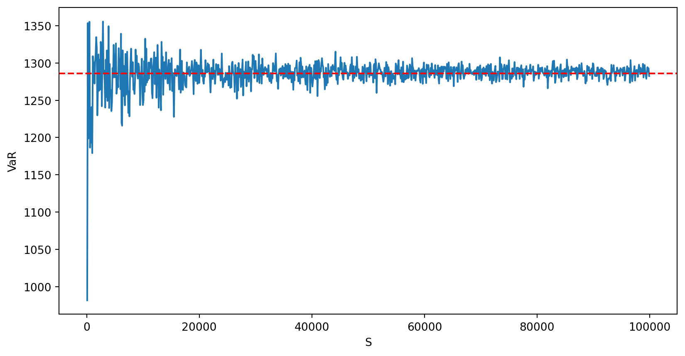
np.mean(VaR_values)
np.float64(1286.2298311022887)
S =40000credit_var(params_R1=params_R1,params_R2=params_R2, lambda_1=lambda_1, \ lambda_2=lambda_2, EAD=EAD, params=params, S=S, tau=tau)